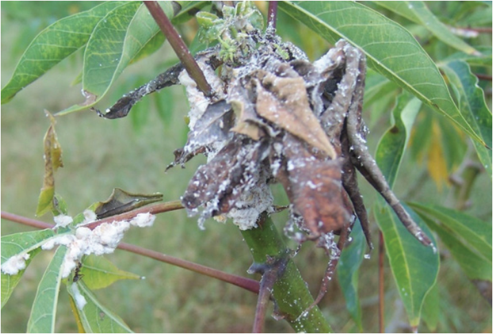

Insect pest management
Effective insect pest management involves strategies to control pests that can
harm crop yield and quality. Fundamental approaches include biological, cultural,
mechanical, and chemical methods. Cultural control involves crop rotation
and sanitation, while biological control uses natural predators and pathogens.
Mechanical methods include traps and barriers, and chemical control involves
careful, targeted insecticide use.
(a) Cassava mealybug: These are small, sap-sucking insects that infest cassava
plants. They are pink, soft-bodied insects covered with a white, waxy cotton
material (Figure 3.6)
Management of cassava mealybug: The insect is managed using planting
materials free from cassava mealybug infestation, destroying severely infested
plants by burning them, and using insecticidal soap mixed with oil or as per
agricultural expert’s recommendation.

Figure 3.6: Cassava mealy bug
Source:https://plantwiseplusknowledgebank.org/doi/10.1079/PWKB.20177801289